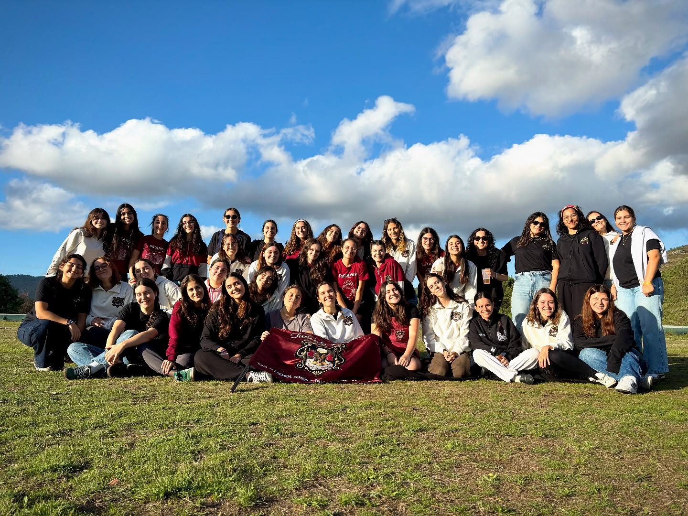
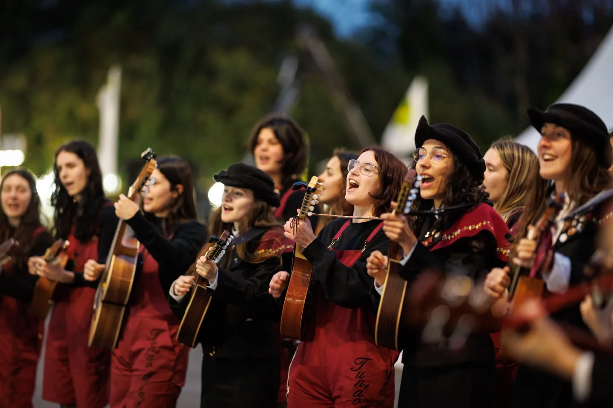
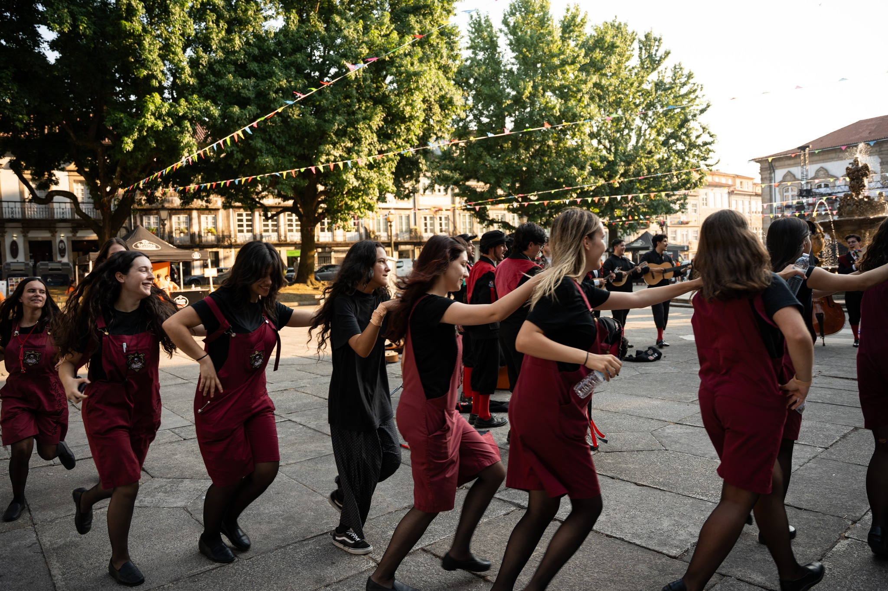

Sobre nós
A Tun'ao Minho - Tuna Académica Feminina da Universidade do Minho - nasceu em 2012, com a vontade de marcar a diferença no panorama das tunas da nossa região. Das Mordomas (Fundadoras) às Capotilhas (Tunantes), incluindo as Lavradeiras e as Bordadeiras (Caloiras), ficou decidido que a Tuna havia de primar pela originalidade e pela tradição, não fosse o Minho um lugar cheio de lendas e muitas canções. Orgulhamo-nos de ser, cada vez mais, uma tuna de referência no Norte, e também a nível nacional. Passo a passo, ano após ano, carregamos o Minho bordado nas costas e a mesma força de querer continuar a ser diferente.
Com apenas doze anos, levamos o melhor da tradição minhota pelo território nacional, internacional, e, mais recentemente, no "Estrelas ao Sábado" da RTP, no qual conseguimos marcar presença na final. Neste momento, somos a tuna feminina portuguesa com mais seguidores no Instagram, contando com mais de 6000, e mantemos uma presença ativa e preponderante nas redes sociais.
Organizamos anualmente o Tunão - Festival de Tunas Femininas, tendo sido realizado o I Tunão, a 18 de novembro de 2016. O festival celebra, também o nosso aniversário, realizando-se, todos os anos em novembro, em 2026 celebramos a décima edição deste festival!
O Nosso Percurso
Participações em Festivais
Prémios Arrecadados
Festivais Organizados
Apresentações na TV
Próximas Atuações
Queres fazer parte da nossa história?
Se gostas de música, tradição e queres fazer amizades para a vida, a Tun'ao Minho é o teu lugar!
📍 Onde ensaiamos: CP1 Universidade do Minho, Campus de Gualtar
⏰ Horário: Segunda e Quintas às 21:00h
Não precisas de saber tocar nenhum instrumento, nós ensinamos-te tudo!
Envia-nos uma DM!

